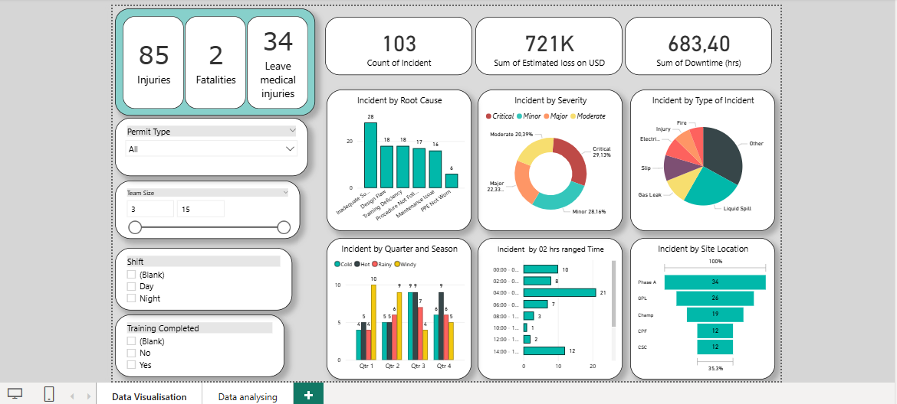
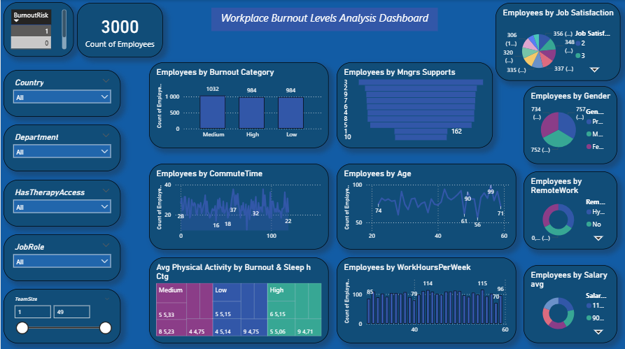

A selection of technical and analytical work combining HSE practice, industrial risk engineering, and data analytics.
Technical Research & Safety Assessment
A technical research report focused on firefighter safety during industrial fire suppression operations in the Oil & Gas sector, with particular emphasis on thermal hazards, human vulnerability, exposure time, distance, and protective equipment.
The study examines major industrial fire scenarios including pool fires, jet fires, flash fires, and fireballs, and analyses their consequences through parameters such as flame behaviour, heat flux, thermal radiation, thermal dose (TDU), and Probit models. It also explores how time and distance influence firefighter exposure and operational safety.
A major part of the work focuses on firefighter protective ensembles, particularly the requirements and performance criteria of NFPA 1971, including Thermal Protective Performance (TPP), radiant heat resistance, flame resistance, total heat loss, and other protective characteristics.
The report brings together fire science, industrial risk assessment, human vulnerability, engineering calculations, and firefighting safety to examine how protective equipment, exposure management, distance control, and operational coordination contribute to safer intervention during high-consequence Oil & Gas fires.
A technical proposal for using a Radio TW communication system during emergency situations, to improve communication, coordination, and information flow between personnel involved in emergency response.
Technical work involving fire and explosion scenario modelling, engineering calculations, and consequence assessment using specialized software, including analysis of thermal radiation, overpressure, dispersion, and impact distances.
Academic and technical work on Safety Integrity Level (SIL) assessment and industrial risk management, completed as part of the Master 2 end-of-study project.
Power BI analysis of onshore fire incidents and accidents over a 10-year period, with analysis of fire types, operational sites, consequences, and safety indicators.
Analysis and visualization of HSE data related to shutdown activities, transforming operational HSE information into an interactive dashboard for monitoring and decision-making.

🔍 Click image to view full sizeExploratory data analysis identifying work stress factors, overtime correlations, and burnout trends to improve employee well-being and safety culture.

🔍 Click image to view full sizeAnalysis of 14,945 fatality cases using OSHA-related fatality data, exploring patterns and trends in occupational fatalities through data cleaning, analysis, and visualization.
🔍 Click any image to view full sizeSee also the Data Analytics page for the Workforce/Burnout Analysis and HSE Incident Dashboard projects.